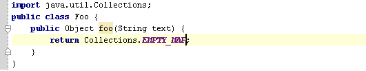

For example, go to Collections.java JDK class, position to the EMPTY-MAP field and press &shortcut:CopyReference;:


You can also copy references in GotoClass/GotoSymbol/GotoFile dialogs.Just press &shortcut:$Copy; on any element in the lookup list.